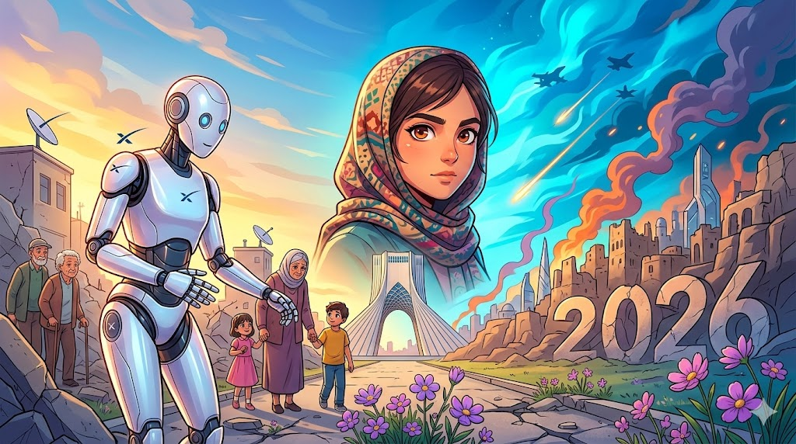

The long-slumbering giant has at last awakened,
And stretching his strong limbs,
Begins to look upon the world with a new light.
The great art of life is sensation, to feel that we exist, even in pain. And it is this ‘internal double consciousness’ which an isolated and precarious life brings forth. — Lord Byron, Letters and Journals (1813)
余談ながら、筆者はこの令和八年三月の静寂なデスクの前で、ある種の「身体的な調和」を感じています。私たちの視界は、マルチモーダルAIが生成するAR情報のレイヤーによってかつてないほど多弁になりました。しかし、ふとした瞬間にそれらのデバイスの電源を切り、網膜を覆うノイズを取り去った先に「富士山が見える」という事実は、2026年の今もなお、日本に生きる私たちの精神を根底から安定させる唯一の不変なアンカー（錨）のようです。
一、構造的検証：『情報のノイズ』と『実存の輪郭』
素材テキストが提示した「富士山が見える」という極めて簡潔な状況。これは単なる風景の描写ではなく、2026年という「高密度情報社会」における究極の引き算です。現在、都市部のオフィスや住宅では、AIが居住者のストレス指数を検知し、窓の透明度やフォーカスを調整して、最も脳がリラックスする比率で山嶺を浮かび上がらせる「バイオフィリック・ウィンドウ」が普及しています。
しかし、技術がどれほど進化しても、標高3,776メートルの巨大な質量が放つ「そこに在る」という圧倒的な実存感を、デジタルで完全に代替することはできません。私たちが求めているのは、4Kや8Kの画素数ではなく、大気を震わせて届く光そのもののクオリア（意識の質感）なのです。
💡 ファクトチェック：2026年の富士山インフラ
- リアルタイム・エコシステム： 富士登山オフィシャルサイトでは、AIが登山道の二酸化炭素濃度や植生の変化をリアルタイムで解析し、環境負荷を最小限に抑える「スマート入山制限」を運用しています。
- 文化的レジリエンス： 2013年に世界文化遺産に登録されて以来、富士山は「信仰の対象」と「芸術の源泉」として、デジタルアーカイブ化が進められています。ユネスコ世界遺産センターの記録によれば、その普遍的価値はテクノロジー時代においても変質していません。
二、変わらない営み：標高が教える『人間の尺度』
「富士山が見える」場所に身を置く。その行為は江戸時代の『富嶽三十六景』の頃から本質的には変わりません。2026年の私たちは、その景色を維持するためにこそ、高度なテクノロジーを「黒子」として活用しています。例えば、景観を邪魔しない低騒音の自律型ドローンが麓の集落に物資を運び、ガソリン車の騒音と排ガスを消し去ることで、私たちは平安時代の人々と同じ「静寂な空気」の中で山と対峙できるようになりました。
テクノロジーは、私たちが「ただ、そこにある美しさ」に集中するための余白を作り出すために存在するべきです。素材テキストが余計な形容を削ぎ落として伝えたように、2026年の最先端を行くライフスタイルとは、高度な知能に支えられながらも、最終的には「山が見える」という原始的な喜びに立ち返ることなのかもしれません。
「もっとも高度な技術は、消えてなくなる。そして、私たちの前にはただ、世界そのものが残る。」
窓を開けてください。あるいは、情報のレイヤーを一度オフにしてみてください。そこにある変わらないシルエットは、私たちが加速しすぎる時代の中で、どこに立っているかを教えてくれる方位磁石です。2026年、私たちはテクノロジーという翼を持ちながら、この美しい大地にしっかりと根を下ろして生きていく。それが、私たちが選ぶべき、最も贅沢な未来の風景です。
📚 参考・関連記事
- 富士山 | 世界遺産 | 文化遺産オンライン — 富士山が「信仰の対象」および「芸術の源泉」として、どのように日本人の精神性に深く根ざしてきたかの歴史的背景を補完します。
- 富士山登山オフィシャルサイト — 記事内で触れられている「スマート入山管理」の基礎となる、現在の登山ルールや環境保護の取り組みの実態を確認できます。
- 富士山世界遺産センター（静岡県） — 富士山の普遍的価値を未来へ繋ぐための活動や、最新の観測データ、景観保全の取り組みを詳しく知ることができます。